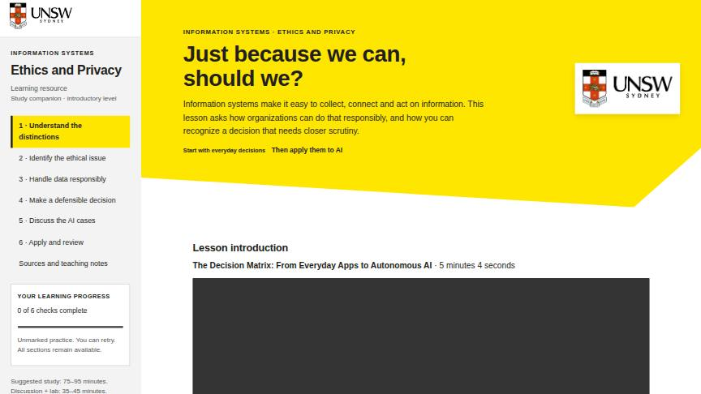

01Information Systems · Ethics & Privacy
Ethics and Privacy
Just because we can, should we? Learners separate ethics, law, privacy and security, then apply them to everyday data decisions and AI cases.
- A running café scenario about collecting, profiling and AI use of customer data
- Introduction video, audio discussions and AI case studies
- Responsibility, accountability and liability in practice